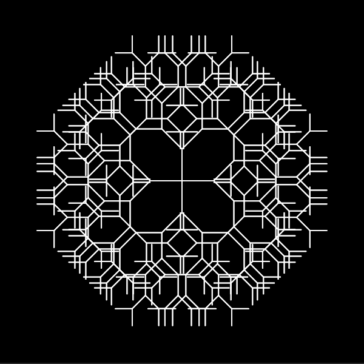
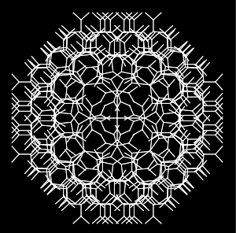

Source Code
Source Code
██████╗ ███████╗███╗ ██╗███████╗██████╗ █████╗ ████████╗██╗██╗ ██╗███████╗
██╔════╝ ██╔════╝████╗ ██║██╔════╝██╔══██╗██╔══██╗╚══██╔══╝██║██║ ██║██╔════╝
██║ ███╗█████╗ ██╔██╗ ██║█████╗ ██████╔╝███████║ ██║ ██║██║ ██║█████╗
██║ ██║██╔══╝ ██║╚██╗██║██╔══╝ ██╔══██╗██╔══██║ ██║ ██║╚██╗ ██╔╝██╔══╝
╚██████╔╝███████╗██║ ╚████║███████╗██║ ██║██║ ██║ ██║ ██║ ╚████╔╝ ███████╗
╚═════╝ ╚══════╝╚═╝ ╚═══╝╚══════╝╚═╝ ╚═╝╚═╝ ╚═╝ ╚═╝ ╚═╝ ╚═══╝ ╚══════╝
██████╗ ███████╗███████╗██╗ ██████╗ ███╗ ██╗
██╔══██╗██╔════╝██╔════╝██║██╔════╝ ████╗ ██║
██║ ██║█████╗ ███████╗██║██║ ███╗██╔██╗ ██║
██║ ██║██╔══╝ ╚════██║██║██║ ██║██║╚██╗██║
██████╔╝███████╗███████║██║╚██████╔╝██║ ╚████║
╚═════╝ ╚══════╝╚══════╝╚═╝ ╚═════╝ ╚═╝ ╚═══╝
With the following four versions its starts to get interesting because they are interactive. Based on the cursors Y position I altered the length of the branches and based on the cursors X position I altered the angle with which the branches start from the previous one.
With versions 5 and 6 I experimented with what should happen when the cursor is in the lower half of the sketch.
Version 5
Version 6
Version 7
Version 8
I don't know why but I liked the experience of the tree always going into the opposite direction as the cursor which is why I created version 7 from version 6. This also sparked an idea in my head to create a kind of game that tests how good the user can control the tree. More on that later.
Version 8 is a big favorite of mine because I love symmetry. Therefore I not only drew one tree but four. I loved to play around with it and I made two screenshots of figures that I found the most beautiful.
 